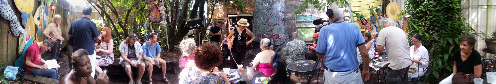

The publication party for the Maple Leaf Rag V was held at the Maple Leaf Bar in New Orleans on August 10th. The auspiciousness of the evening being a “Super Moon” surprised no one.
According the the New Orleans Historical web site, “In 1979, famed local poet Everette Maddox began the series with sculptor Franz Heldner and poet Nancy Harris.” The weekly reading has continued uninterrupted for thirty-five years, save for Mardi Gras, hurricanes, and an occasional Saint’s playoff game. Since Everette’s death in 1989, the readings have been guided by the capable hands of Nancy Harris.
The Maple Leaf Rag V is the fifth anthology of work by poets and writers published over three and a half decades of readings on the Maple Leaf’s back patio. The current volume contains the work of (by my count) 78 poets. The publisher, John Travis, owner of Portals Press, and Nancy Harris deserve the thanks of the literary community in New Orleans and beyond for producing this exceptional work. John has published the last four Maple Leaf Rag anthologies. His work has been a significant addition to the artistic life of New Orleans and, taken together, represents an amazing historical record of the New Orleans poetry scene. John threatens that this may be his last. We’ll see.
Compared to other communities, the poets in New Orleans are remarkably diverse lot, and they are a real community. If you can imagine a weekly party of strange and wonderful people who love the written word, you’ll be close to what Sunday afternoons at the Maple Leaf have become.

Nancy has fostered an environment at the Maple Leaf that is welcoming to people of every background, ethnicity, social strata, temperament, and artistic taste. This variety is reflected in this anthology.
If you find yourself in New Orleans on a Sunday afternoon, do yourself a favor and drop into the Maple Leaf Bar… and bring your poetry.
The following poem is one of my own, selected by John Travis for inclusion in the Maple Leaf Rag V.
Hold Her Close
new orleans has wet and mud where people walk and stand
and know the earth they’re livin' on and how it feels to hold her close
through her nearby marshes oil canals cut obscenely straight and narrow
run miles through watery green, a highway of danger for muskrats and nutria
leafy sinews strangle the house who lost her family two summers ago
soon, with no friend, losing her battle with flora, ruin
potholes kill and eat incautious cars where there're guns enough
that someone always wants to see what steel and absent hope can do
you choose your costume for the day to say yesterday's gone,
tomorrow's not come and you got one shot at now
overhead the white-cloud virginal bandana floats, a hand's wavin’
sayin' my life's an all night dance and I mean somethin' by it
the lady says, how you doin' and really wants you to know that
different got it all over respectable and a little crazy ain't bad either
you’re no stranger after a beer and swapped stories in the cool dark bar
you want today's road to be one you'll still remember tomorrow
the meanings of barstool stories is not in the words,
but how they dart and pause, unwrap and disrobe the tellers
new orleans has wet and mud where people walk and stand
they know the earth they’re livin' on and how it feels to hold her close